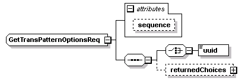
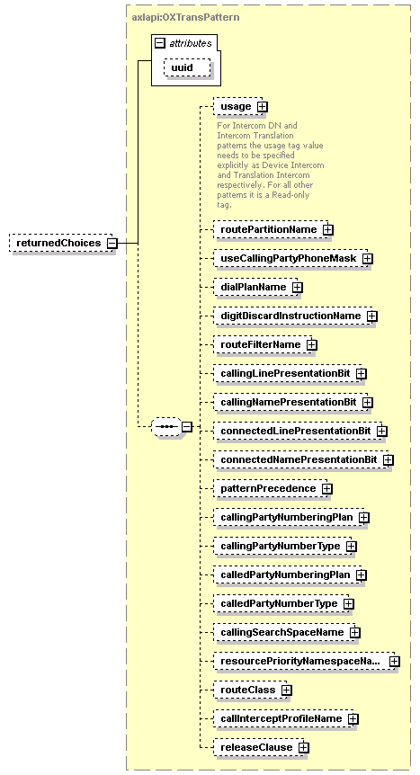

| diagram |  | ||||||||||||
| namespace | http://www.cisco.com/AXL/API/10.5 | ||||||||||||
| children | uuid returnedChoices | ||||||||||||
| used by |
|
||||||||||||
| attributes |
|
||||||||||||
| source | <xsd:complexType name="GetTransPatternOptionsReq"> <xsd:sequence> <xsd:choice> <xsd:element name="uuid" type="axlapi:XUUID"/> </xsd:choice> <xsd:element name="returnedChoices" type="axlapi:OXTransPattern" minOccurs="0"/> </xsd:sequence> <xsd:attribute name="sequence" type="xsd:unsignedLong" use="optional"/> </xsd:complexType> |
| type | xsd:unsignedLong | ||
| properties |
|
||
| source | <xsd:attribute name="sequence" type="xsd:unsignedLong" use="optional"/> |
| diagram | |||||||
| type | axlapi:XUUID | ||||||
| properties |
|
||||||
| facets |
|
||||||
| source | <xsd:element name="uuid" type="axlapi:XUUID"/> |
| diagram |  | ||||||||||||
| type | axlapi:OXTransPattern | ||||||||||||
| properties |
|
||||||||||||
| children | usage routePartitionName useCallingPartyPhoneMask dialPlanName digitDiscardInstructionName routeFilterName callingLinePresentationBit callingNamePresentationBit connectedLinePresentationBit connectedNamePresentationBit patternPrecedence callingPartyNumberingPlan callingPartyNumberType calledPartyNumberingPlan calledPartyNumberType callingSearchSpaceName resourcePriorityNamespaceName routeClass callInterceptProfileName releaseClause | ||||||||||||
| attributes |
|
||||||||||||
| source | <xsd:element name="returnedChoices" type="axlapi:OXTransPattern" minOccurs="0"/> |